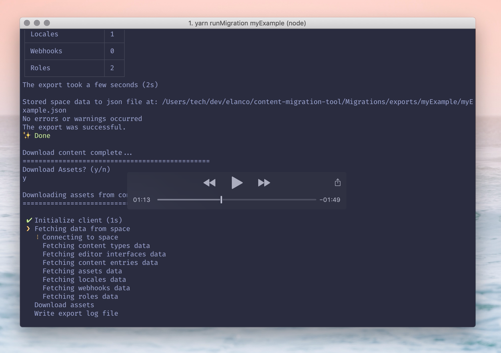
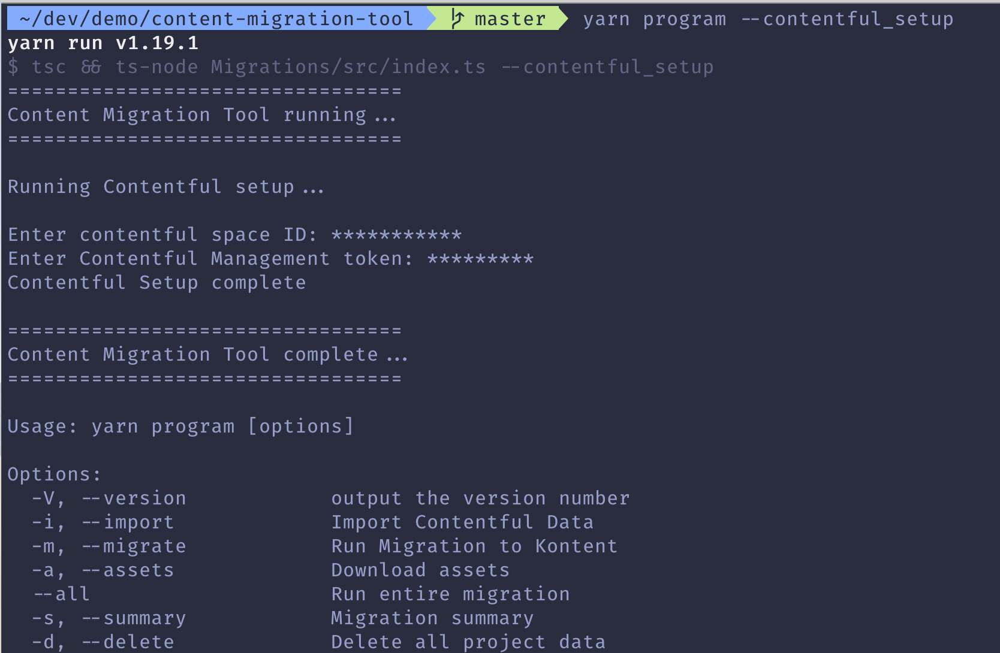
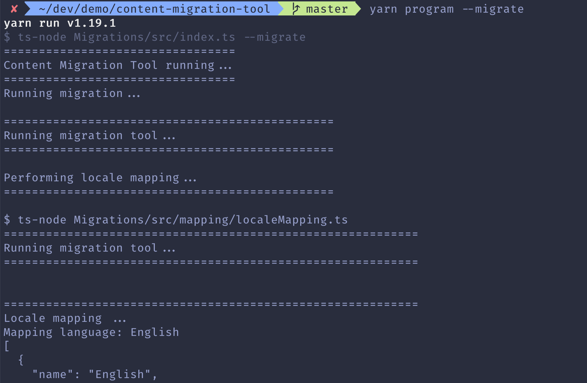
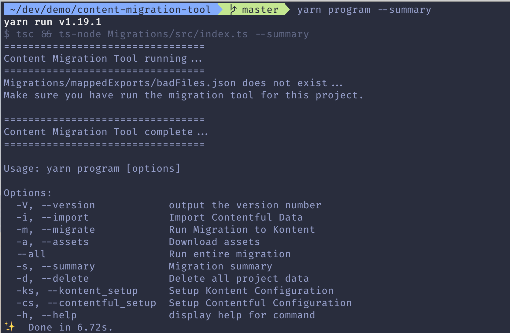

Welcome to Elanco Content Migration Tool 👋
Tool to migrate content + assets from our previous CMS over to Kontent.
✨ View Demo 
Prerequisites
yarn, a UNIX system (on windows, this is possible by using Git Bash terminal client, or similar)
cross-env.
yarn global add cross-env
Install
-
Clone this repository
git clone git@github.com:elanco/content-migration-tool.git -
cd into the project
cd content-migration-tool -
Install package dependencies
yarn
Usage
Start the script to run the Content migration tool program.
yarn program

The project name can be whatever you want, it allows the program to organise the files and downloads using the project name as it's file path.
For example Migrations/exports/[MY PROJECT NAME] and Migrations/mappedExports/[MY PROJECT NAME]
Steps
- Setup Kontent config
yarn program -n [PROJECT_NAME] --kontent_setup
- Kontent project id
- Kontent management token
- Setup Contentful config
yarn program -n [PROJECT_NAME] --contentful_setup
- Contentful space id
- Contentful management token

- Import all content from Contentful space.
yarn program -n [PROJECT_NAME] --import

- Apply the asset flag to download assets.
yarn program -n [PROJECT_NAME] --import --assets
- Migrate the content to Kentico Kontent
yarn program -n [PROJECT_NAME] --migrate

Content entry and asset mapping begins, converting all the exported content to json files that Kentico Kontent's cli tool can understand.
This will update the Kentico Kontent project with all the content from contentful.
- Review a summary of the migrated content, if any failures/ issues have occured.
yarn program -n [PROJECT_NAME] --summary

- Delete all the project files from your local machine
yarn program -n [PROJECT_NAME] --delete
- Import and Migrate in one go.
yarn program -n [PROJECT_NAME] --all
Testing
I have tested the Migration tool with very large contentful spaces and the tool performs well, as well as an Example project, where I have tested every feature of Contentful.
In cases, where there are warnings, such as no file exists for the asset (this is a situation where there has been an asset created, without any media attached whatsoever), then there is an output JSON file which features all of the content that failed to be uploaded.
Overview
The Content migration tool would allow for entire contentful spaces to migrate over to Kentico Kontent projects completely automated.
What is migrated:
- Locales - language variations.
- Content Types - Models how a content entry would function.
- Content Items - Content entries, instances of content types that contain the information / data that would feed into applications.
- Assets - All the media on a project, Images, Videos, Zip Files, PDFs, etc.
When migrating over, it will migrate the specific language variants rather than any default entries, so to find the migrated content you must toggle to the uploaded language in the Kontent UI.
This is because Kontent treats locales very differently than in Contentful. And because of the nature of the migration tool achieves for a migration of hundreds of sites, it is not possible to assume that English (US) will always be the 'default' language variant.
Locale Migration
If a contentful space would have multiple language variants for each project, I.e. en_US, en_UK ... Then those variants will be migrated over. Within Kentico Kontent, you can then assign what language variant should be the default fallback language, or even what languages to deactivate.
Content Types
These are models of what content entries should look and behave like. Holds information such as field names, and the types of those fields. Example. Title = Text Field, Date of Birth = Date Field.
The migration tool would convert each of these fields to their respective Kentico Kontent field type. In some cases there are minor disrepencies.
Disrepencies
- Arrays ([tag1, tag2, tag3])
- There are no array element type within Kentico Kontent. A workaround is for the array to be represented as a text field, that is wrapped in square brackets. '[tag1, tag2, tag3]', with comma separated items.
- This is the simplest and most sensible solution, architecturally, using a linkedList for arrays makes the most sense, however linked lists are quite large.
- Rich Text
- Rich Text content is migrated over, however any attached Assets, or reference items may not be correctly migrated over. In cases where there are rich text, it is worth to double check to see if the tool handled it correctly. This is a potential work in progress.
Content Items
Content Items shoud also be mapped to their new field types. If there are contentful asset urls spotted in any text based fields, then those urls would be automatically transformed into Kentico Kontent urls that provides the same asset.
Assets
Assets, as long as they meet Kentico Kontent technical requirements, will all be migrated, and all the references to an existing asset in contentful will also be migrated over. So no relationships between assets, or even other content item entries are broken.
Disclaimer
yarn program -n [PROJECT_NAME] --summary
Files over the 100MB limit will not be uploaded, as this exceeds Kentico Kontent's asset size limit.
When running the tool, all the files that are unable to be uploaded are recorded and logged. Found in /Migrations/mappedExports/NAME_OF_PROJECT/badFiles.json
The badFiles.json file would contain asset entries that are:
- Too large.
- Have a poorly formatted title (I.e Title is over 50 characters / non exists )
- Non existing (There could be an asset entry without an asset provided / or has been deleted.)
For assets that are too large, or have a non existing asset entry. They will not be migrated over to Kentico Kontent. If you wish to upload those manually, you must first compress the file, or in the case of a video, use a video streaming platform rather than uploading a video.
For assets that have a large filename, they will be uploaded to Kentico Kontent, however the title will be shortened. The full title will appear within the description however.
Next Steps for Migration
Now that the content is migrated over to the new CMS platform. The migration effort required now, will be to house the new CMS platform.
In each site where we are currently using Contentful, we need to replace every API call with their respective Kentico Kontent API call.
The codebase that exists currently does not need to change very much. This should be a Lift and Shift task rather than a complete rebuild.
The Kontent API will of course have a different interface that Contentful, and the JSON format of the data is quite a bit different than Contentful, however it is possible to achieve a translation.
The task required
Similar to how this Content Migration Tool, translates content from Contentful to a format that Kentico Kontent understands, we need to build a utilility function / middleware that is able to translate the new Kontent API JSON data, into the format that the code base is expecting the data to be in.
For example. The codebase may have code such as:
const articleText = contentfulData.article.text
However in Contentful that same method may look like:
const articleText = kontentData.article.value.text.value
We need to work out the simplest possible way to achieve this result of switching out our Headless CMS.
This task should be the priority as this would require the most technical challenge, as we need to ensure that the sites still function the same, and the content is unchanged.
For sites that were not previously on Contentful, that is a separate challenge, that would require a rebuild step by step of converting hard coded values into values generated from the CMS.
For those hard coded sites, it may benefit you from looking at how we currently generate content via the CMS in our applications, however you must know that we will be wanting to improve in how we carry that out with future sites. But for lift and shift, it is adequate.
Author
Matthew Castrillon-Madrigal.
If you have any questions or suggestions, please email me.